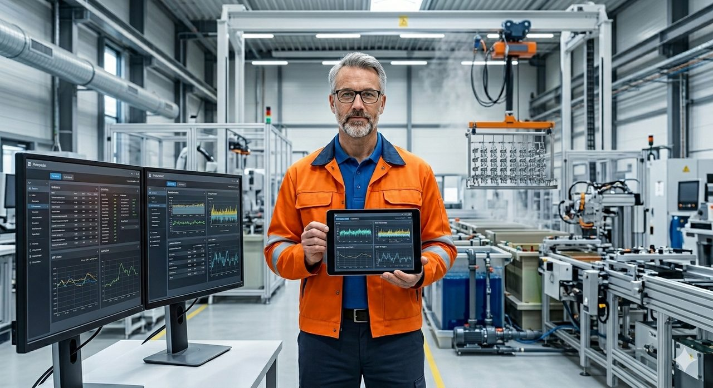

KI-Diagnose
Details
- Ausgewertet wird nur, was Ihre Anlage ohnehin aufzeichnet — kein Eingriff in den Betrieb
- Konkret benannt: welche Anlage, welcher Parameter, welche Schicht
- Bericht, Management-Foliensatz und KI-Klick-Demo mit Ihren eigenen Daten
Leistungen
Erst die Ursache finden, dann live erkennen, am Ende vorher reagieren — hier die Stufen im Detail, mit Ablauf, Beispielen und häufigen Fragen. Oder direkt ein kostenloses Erstgespräch.
In 2 Minuten
Der Einstieg
Acht Wochen, ein Ergebnis: die belegte Ursache hinter Ihrem Ausschuss — plus die ehrliche Antwort, ob Ihre Datenlage eine laufende Live-Erkennung trägt. Nicht sicher, ob es passt? Starten Sie mit einem kostenlosen Erstgespräch.
Fester Projektpreis für die gesamte Diagnose — kein Stundensatz, keine offene Rechnung. Sie kennen die Zahl, bevor die ersten Daten übergeben werden.
Für österreichische Betriebe können Förderungen (aws, KMU.DIGITAL) die Kosten deutlich senken. NDA vor jeder Datenübergabe, kein Eingriff in den laufenden Betrieb.
Erstgespräch vereinbarenLieber erst unverbindlich kennenlernen? Ein Vor-Ort-Tag genügt.
Der Ablauf
Acht Wochen, ganzer Standort, fester Projektpreis — schwarz auf weiß, und alles gehört vom ersten Tag an Ihnen.
Anlage verstehen, Daten konsolidieren, Probleme priorisieren.
Auswertung auf abgeschotteter Hardware, Ursachenanalyse, Abschluss bei Ihnen vor Ort.
Kostenlos. Wir klären, ob die Diagnose für Ihre Anlage Sinn macht.
Geheimhaltung unterschrieben, Sie erhalten die konkrete Datenliste.
Anlage gemeinsam betrachten, Datenübergabe verschlüsselt.
Auch wenn eine Ursache nicht eindeutig zu klären ist — Sie bekommen in jedem Fall:
Was nach der Diagnose möglich wird
Berichte für Behörde & Hauptkunden · Live-Auswertung in der Produktion · Tracking mit AT-Förderoptionen. Folgeprojekte separat, individuell kalkuliert.
Sensoren, Labor, SCADA, Excel, Reklamationen
Abgeschottete Hardware, Machine Learning, kein Cloud-Upload
Bericht, Klick-Demo, später Dashboard mit Live-Auswertung
Konkrete Hebel für Verfahrenstechnik, Produktion und QM
Ihre Daten bleiben unter Ihrer Kontrolle: Übergabe auf einem Übertragungsweg Ihrer Wahl — dokumentiert und datenschutzkonform. Auswertung auf abgeschotteter Hardware.

Ihr Techniker bleibt am Becken — mit der Auswertung als Werkzeug direkt zur Hand, dort wo die Entscheidungen fallen.
So sieht das aus
Häufige Fragen
Drei Bereiche — öffnen Sie das, was Sie interessiert.
Ein fester Projektpreis für die gesamte Diagnose — kein Stundensatz, keine offene Rechnung. Die genaue Zahl nenne ich Ihnen nach einem kurzen Erstgespräch; Sie kennen sie, bevor die ersten Daten übergeben werden.
Für österreichische Betriebe können Förderungen (aws, KMU.DIGITAL) die Kosten deutlich senken — die Optionen besprechen wir gemeinsam (siehe nächste Frage).
Nicht jede Ursache ist auf Anhieb eindeutig. In den meisten Diagnosen werden die Hauptursachen klar sichtbar. In den kniffligen Fällen bekommen Sie:
– eine strukturierte Analyse, welche Hypothesen die Daten stützen und welche ausgeschlossen werden können
– konkrete nächste Schritte, z. B. welche Zusatzmessung die offene Frage klärt
– die Klick-Demo, an der die Ergebnisse interaktiv durchgegangen werden können
Sie verlassen die Diagnose in jedem Fall mit mehr Klarheit als vorher.
Mit Bericht, Foliensatz und Klick-Demo können Sie eigenständig weiterarbeiten. Drei typische Folgewege — Berichte für Behörde & Hauptkunden, Live-Auswertung in der Produktion, kontinuierliches Tracking — sind unter „Was nach der Diagnose möglich wird" kurz beschrieben.
Für österreichische Unternehmen werden Folgeprojekte gemeinsam über KMU.DIGITAL, aws oder FFG strukturiert — das kann Ihre direkten Kosten deutlich senken.
Nein. Die Diagnose ist abgeschlossen und vorzeigbar nach 8 Wochen. Was als Folgeprojekt sinnvoll ist, entscheiden Sie auf Basis der Ergebnisse — Schritt für Schritt, nicht als Paket-Lösung.
Das, was Sie bereits erfassen: Sensor-Logs, SCADA-Historie, Excel-Aufzeichnungen, Laborprotokolle, Reklamationsberichte. 3–12 Monate Datenhistorie sind ein guter Start.
Lückenhafte Daten, unterschiedliche Formate, Zeitversatz — alles Regel, nicht Ausnahme. Wird in der Diagnose professionell aufgearbeitet. Wo die Datenlage etwas Wesentliches nicht erlaubt, gibt es eine klare Aussage dazu — plus Vorschlag für gezielte Zusatzmessungen.
Nein. Ausgewertet werden ausschließlich die Daten, die Ihre Anlage ohnehin schon produziert. Kein Eingriff in den Produktionsbetrieb, keine neue Sensorik nötig. Eigene IT-Abteilung ist nicht erforderlich — Sensor-Logs, Excel, SQL-Datenbank reichen.
Ja. Vor der Datenübergabe wird eine Geheimhaltungsvereinbarung (NDA) unterschrieben — Vorlage liegt vor und kann auf Wunsch durch Ihre Rechtsabteilung angepasst werden. Erst danach wird Datenmaterial übergeben.
Übergabe per verschlüsseltem Datenträger. Auswertung auf abgeschottetem lokalen System — keine Cloud-Bindung. Auf Wunsch: vollständige Löschung nach Projektende, schriftlich bestätigt.
Bericht und Klick-Demo gehören Ihnen. Voller Zugriff auf Rohdaten und Insights — Sie können jederzeit mit anderen Dienstleistern weiterarbeiten.
Schildern Sie kurz Ihre Situation — Sie bekommen eine ehrliche Einschätzung, wo der Einstieg am meisten bringt. 30 Min, unverbindlich.